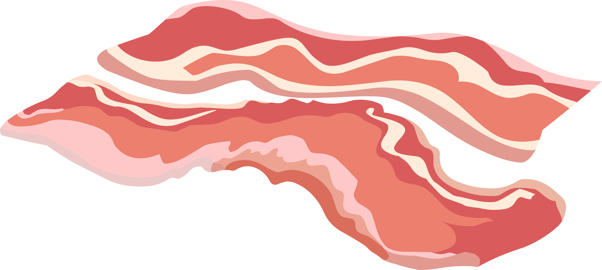

Inline elements will only take up as much space that are being used - 3 letters will take 3 letters
programmer
you cannot change the with of an inline element like you can on a block element.
but there are ways to work arround this
you can force it to display as inline with css like below with - Display: inline
i am now displayed as inline -- but you cant change the width still
i am now displayed as inline -- but you cant change the width still
below i used a span element that should be on the same line, but as i set it to display as a block element it goes to the next line.
blocktest by using a inline span element blocktest by using a inline span element blocktest by using a inline span elementbelow i have used css to style it as a inline block with Display: inline-block
as you can see they are now on the same line inside a block
Hello
World
below the paragrapgh with text World is set to hidden, skipping it all together
Hello
World !
Hello
below we have red as background color, nr.2 set as hidden, and all is set to inline block as you can see, the word big is now hidden, But the important part here is that it is still using the space it normally would have done, witch is in the middel of the two other words.
Hello
World !
Images are static by default
Relative position means, in relative to where it used to be.
if we set left:30px it will move from the left 30px from where it USED to be
lets set its relative position to "left 30px"
there a 4 positions to set, top, bottom, left , right
all squares set to height and with 100px, and background color set in internal css
--------------------------------------
--------------------------------------
moving red down by 50px, everything is set as default, no positioning
nothing happens !
--------------------------------------
moving red down by 50 px, setting red square positioning as relative
now it has moved on top of the blue by 50px, blue is keeping its position
--------------------------------------
moving red down by 50px with relative, blue and yellow is now set to relative
now blue that hasnt moved, is now on top of the red, yellow stays put
--------------------------------------
solution and explaination : The all important fact here is the word relative. if i set one of the squares to inline, it shrunk to the size of the text inside, so it got very small, and that goes along with that a inline element uses only the space needed.
so the red had to be moved to the left relative to its position 200px
the blue had to be move 100px closer to top top, so relative to bottom 100px
the yellow, in relative to its position had to be moved 200px from the bottom and up. and 100px relative to the left side
What happens if we set the picture to absolute position inside a div to 30px
from the last example when we used relative, moving the red square to the right, the blue and yellow squares stayed put.
---------------------------------------------
by moving the red square that is set to absolute position to the left 200px the natural flow changes, blue and yellow moves up.
---------------------------------------------
blue is now been overlapped by the yellwo square
---------------------------------------------